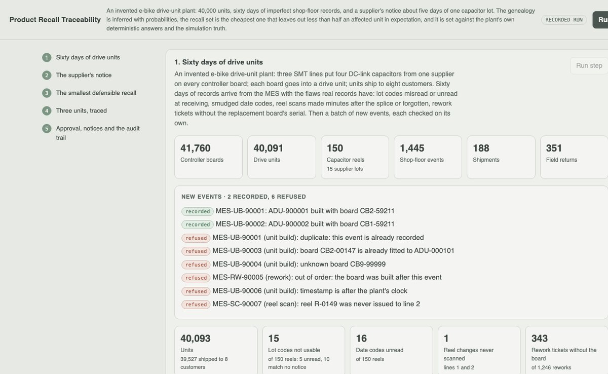
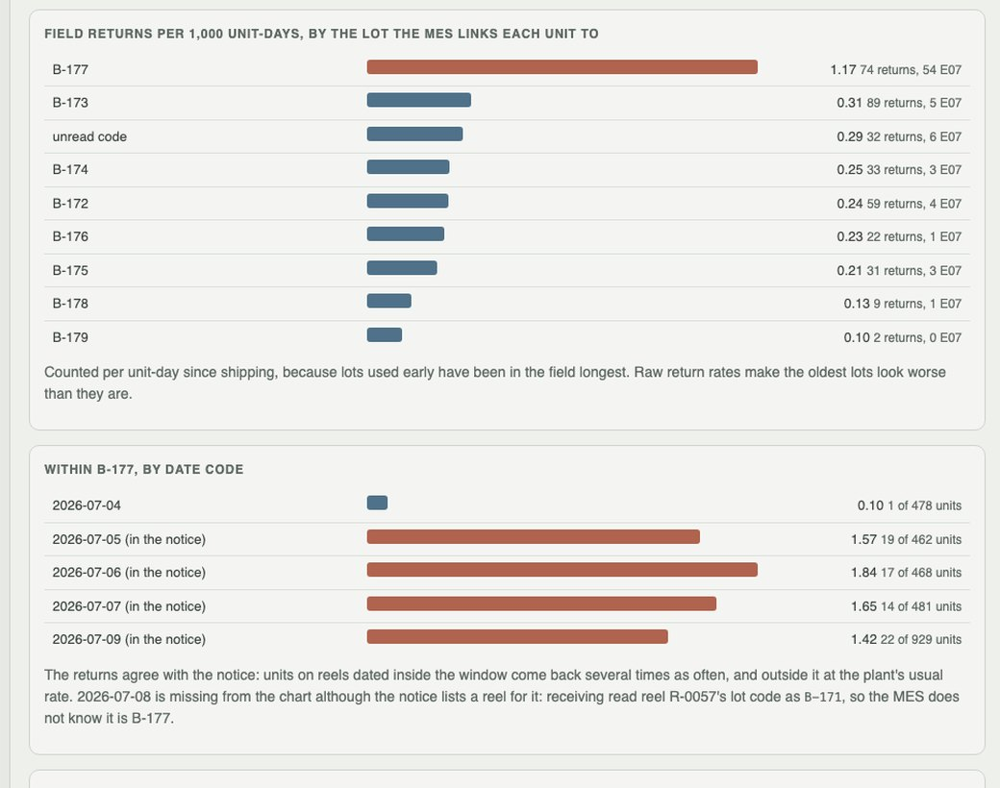
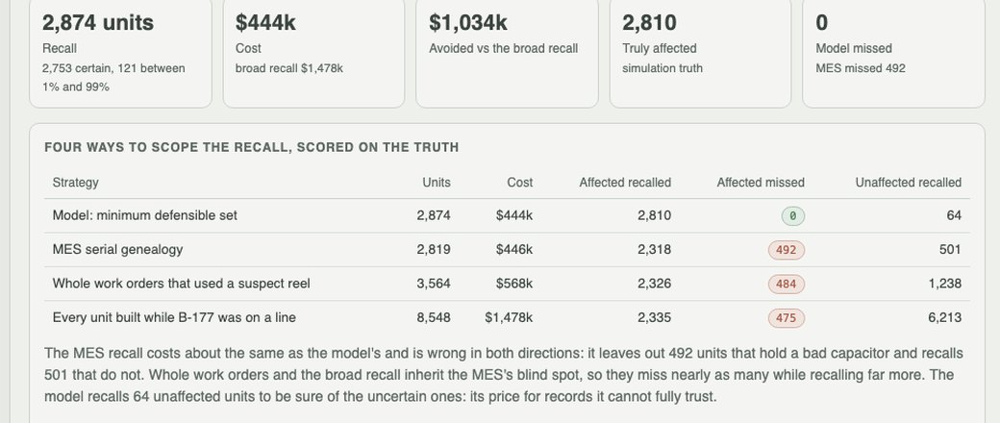

Python · probabilistic genealogy · optimisation · 2026-10
Which of 40,000 Drive Units Hold a Bad Capacitor?
A recall scoped from shop-floor records that are wrong the way real ones are: misread lot codes, late reel scans, rework tickets without the board. Every unit gets a probability; the cheapest defensible set recalls 2,874 units for $444k and misses none of the 2,810 truly affected, where the plant's own genealogy misses 492 and a broad recall costs $1,478k.

Built from a written blueprint as one vertical slice. The plant is simulated: the drive-unit plant, its records and their flaws, the supplier, the customers, the field returns and the defect come from a generator in the repository, which also knows which units really hold a bad part; no strategy sees that truth, it only scores them. No company, product or person is real. No language model is used. Not built: anomaly clustering of returns (an exposure-adjusted rate ratio per lot stands in), multi-tier BOMs, real ERP/MES connectors, Kafka, Terraform, single sign-on.
01 — The problem
A supplier writes: capacitors from lot B-177 made on five days in July may fail. Somewhere among 40,000 shipped drive units are the ones holding one. The plant's records say which, except that receiving misread some lot codes, smudged date codes went unread, operators scan a new reel minutes after splicing it (or forget), and a quarter of rework tickets do not say which board went in. Recall too little and a failing unit stays on a rider's bike; recall too much and the cost triples. Can the genealogy be inferred with honest probabilities, and the recall set chosen so that it is both cheap and defensible?
Blueprint 16 of twenty in a fourth build book, built as its demo scenario end to end.
02 — What I built
A Python service on PostgreSQL with a background worker and a web page, started by one docker compose up.
- A simulated plant: three SMT lines, reels from supplier lots with date codes, splices that put two reels on one board, spares and rework, shipments to eight customers, field returns, and records with realistic flaws.
- Record models learned from the records: the misread rate from deliveries of one lot, the scan delay and boards per reel from the line with splice sensors.
- Genealogy with probabilities: reel to lot (exact under the ship notice's counts), reel to date code, reel to board around every splice, board to unit through rework.
- A recall optimiser priced by where each unit is, against three deterministic baselines, all scored on the simulation truth.
- Evidence, approval and notices: the returns per lot and date code, four-eyes approval, customer notices as JSON and CSV.
03 — How it was built
- 01
A plant whose records are wrong in the usual ways
Sixty days of an invented e-bike drive-unit plant: 41,760 controller boards, 40,091 units, 150 capacitor reels in 15 lots, 188 shipments. The MES hands over its history with the flaws real histories have: 15 of 150 lot codes unread or matching no ship notice, 16 date codes unread, a reel change never scanned, 343 of 1,246 rework tickets without the replacement board's serial. New events are checked one by one; a replay, a board already fitted, an unknown board, an out-of-order rework, a future timestamp and a reel never issued to that line are refused.
if board["built_at"] > e.at: return "out of order: the board was built after this event" - 02
Check the supplier's claim against the returns
Before anything is recalled, the 351 field returns are set against the notice. Raw return rates blame the oldest lots, which have simply been in the field longest, so the rate is per unit-day since shipping: units the MES links to B-177 return 4.7 times as often as the rest (90%: 3.8–5.8), every other lot is near 1, and within B-177 the reels dated inside the window return at 1.4–1.8 per 1,000 unit-days against 0.1 outside it. One window date is missing from the MES's view entirely: receiving read that reel's code as B-171.
ratio = (ra / da) / (rr / dr) # returns per unit-day, lot vs rest se = math.sqrt(1 / ra + 1 / rr) - 03
Learn how the records go wrong, then infer the genealogy
The misread rate is learned from deliveries that carried one lot, where the right answer is known (1.1% of characters). The scan delay and the boards a reel lasts are learned from line 3, whose feeders log every splice (5.9 minutes, 491 boards). Each reel's lot is the exact posterior under the ship notice's counts; each board's reels follow from when the splice could have happened; a rework ticket without a serial spreads the unit over the spares that could have gone in.
pa = r[i] * esp(np.delete(r, i), nA - 1) / esp(r, nA) # P(reel i is lot A | reads, counts) p = G[i] * (1 - Gp[i + 1]) # splice i before, splice i+1 after - 04
The cheapest recall that leaves no defensible doubt
Every unit above 1% is in. Below that, units are left out in order of cost saved per unit of risk until the expected number of affected units left out reaches half a unit. Getting a unit back costs $18 in the warehouse, $95 at a customer, $380 on a rider's bike. The result: 2,874 units for $444k, with 0.08 expected misses. The MES's deterministic genealogy costs the same and misses 492 affected units; whole work orders cost $568k; every unit built while B-177 was on a line, $1,478k.
o = cand[np.argsort(-cost[cand] / p[cand])] include[o[np.cumsum(p[o]) > max_expected_escapes]] = True - 05
Scored on the truth, including where it breaks
On three plants the demo never uses, the model missed 0–1 of 2,816–3,268 affected units and recalled 52–67 unaffected; the MES missed 35–486. Its probabilities are roughly calibrated (units at 25–75% were affected 59% of the time). Then the simulator was changed to break each assumption the model cannot check: when stores hand out spares at random, the model misses 69 affected units while still expecting a quarter of one. Its confidence does not fall when its assumptions do.
("Reworks take any spare on the shelf", {"spare_pick": None}) # 69 missed, 0.26 expected
04 — Results
The demo. The returns against the notice, per lot and per date code:

Four ways to scope the recall, scored on the truth:

On three other simulated plants:
| Model | MES genealogy | Broad recall | |
|---|---|---|---|
| Affected units missed | 0–1 | 35–486 | 29–477 |
| Unaffected units recalled | 52–67 | 45–504 | 2,472–5,646 |
| Cost | $428k–$499k | $385k–$566k | $823k–$1,281k |
The MES misses hundreds when one reel's lot code is misread (two of four plants) and a few dozen otherwise, from rework tickets and late scans; it over-recalls because an unread date code counts as suspect. The broad recall inherits the same blind spot, so it costs two to three times as much and misses nearly as many.
Honest limits. The model's structure matches how the simulator makes its flaws, so these are close to the best a model could do; it assumes stores hand out the oldest spares, that lines 1 and 2 scan like line 3, and that ship notices count correctly. Breaking the first costs 69 misses over three plants, the second 19; a notice that over-counts costs 1,283 extra units but no misses. One tier of supply only.
Checks. 9 tests, including: each board holds one reel or two at a splice and no board is fitted twice, the lot posterior equals brute-force enumeration under the notice's counts, the optimiser keeps its policy and is within 15% of brute force, the learned record models and the scope beat the MES on a held-out plant, records survive the round trip through the database, the demo journey with its refusals and four-eyes approval, notices refused before approval, and one manufacturer cannot see another's units.
05 — What I'd do next
- A stores ticket audit, or a scan at the rework bench, to replace the guess about which spare went in: the model's weakest piece.
- Clustering field returns by symptom and genealogy to find a bad lot before the supplier does.
- A second supply tier (the capacitor maker's own lots), chaining the same posteriors.